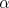
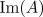
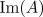

such that there exists a stable
range of wavenumbers then simulate the CGLE with an initial condition of small noise
then plane waves are automatically selected.
such that there exists a stable
range of wavenumbers then simulate the CGLE with an initial condition of small noise
then plane waves are automatically selected.
Here we illustrate the theoretical results of the previous page by simulating the CGLE using pseudospectral code with periodic boundary conditions. The MATLAB file that was used to generate these images is available for download from the resources page.
Let us begin by visualising plane waves. If we choose 
and such that there exists a stable
range of wavenumbers then simulate the CGLE with an initial condition of small noise
then plane waves are automatically selected.
 ,
,
 and 
for
and 
for  . The container size was 200 and
the initial condition was noise of order 0.01.
. The container size was 200 and
the initial condition was noise of order 0.01.
We see that quickly converges to a
non-zero constant value. However, as seen in the evolutions of
and ,
the wavenumbers of the newly-selected plane waves do not settle down as
quickly. Rather, a much larger time-scale is needed for the wavenumber to be
independent of space. Ultimately, the space-time contours will become straight
lines.
If we now consider the same parameter space but using a linearly unstable plane wave as our initial condition then we can observe the Benjamin-Feir instability:

 and
for . The container size was 100 and
the initial condition was an unstable plane wave.
and
for . The container size was 100 and
the initial condition was an unstable plane wave.
Here we see a new plane wave is selected with wavenumber lying inside the
band of stability. The process of selecting the new plane wave
gives rise to 6 'defects' or phase singularities (points where  is
zero) where the wavenumber of the plane wave
is altered by a discrete amount. This behaviour matches that of the Eckhaus
instability for stationary solutions to the RGLE. A range of other behaviours are
possible when the Benjamin-Feir-Newell criterion is violated; a selection of these
are documented on the next page.
is
zero) where the wavenumber of the plane wave
is altered by a discrete amount. This behaviour matches that of the Eckhaus
instability for stationary solutions to the RGLE. A range of other behaviours are
possible when the Benjamin-Feir-Newell criterion is violated; a selection of these
are documented on the next page.


{kind=link}